TA is a interior finishing company. It's a client, for whom I have designed and created first webside and branding in 2014. Following website and logo I redesigned recently.The website is fully responsive and contains mini interactions, like image zoom in on hover.
I follow IDEO design process, as I had opportunity to visit IDEO offices and brainstorm a project ideas with their Senior Interaction Designer.
The entire construction and finishing sector reached a value of over PLN 350 billion in 2024, with a forecast of exceeding PLN 400 billion by 2026. The interior finishing services market in Poland in 2024/2025 is a sector dominated by professionalization, stabilization of material prices and growing demand for comprehensive services. Platforms such as Oferteo are recording a dynamic increase in inquiries about renovation and installation services.
After competition comparison, I have done eleven iterations of homepage idea starting from low fidelity to html mockups.
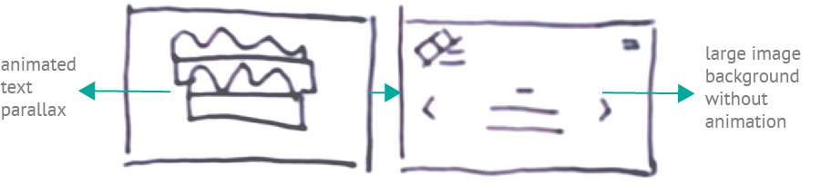
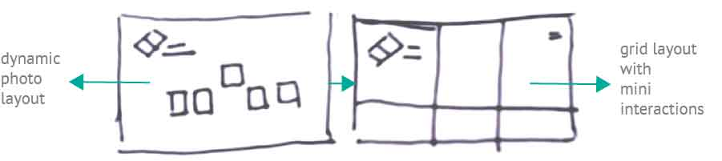
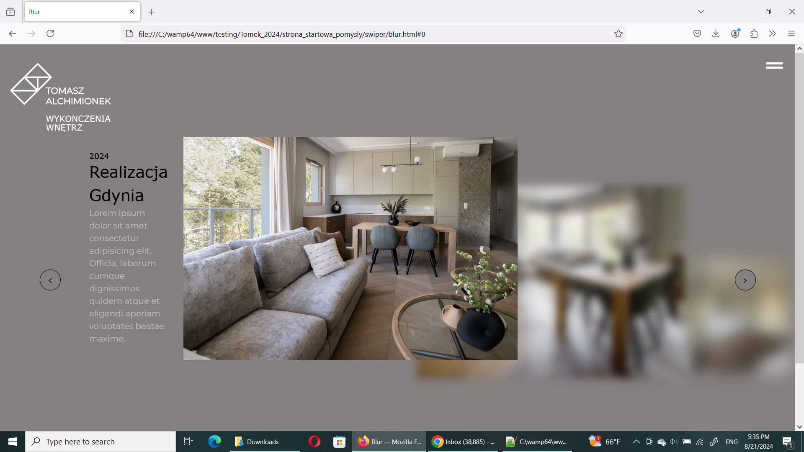
After testing high fidelity mpckups, I have simplified the homepage idea and cut some on hover interactions in realisations page. This finally led to the outcome as seen below.
The website implementation included creating a number of responsive views and testing on varied devices.
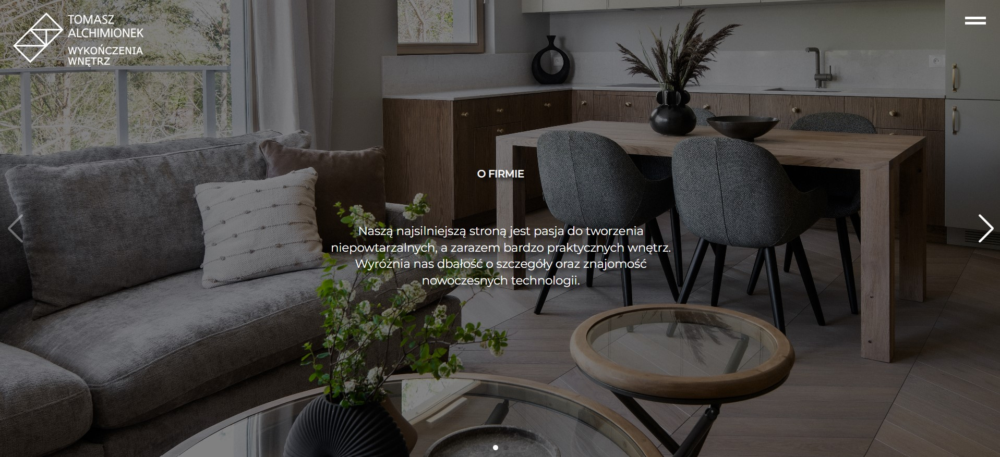
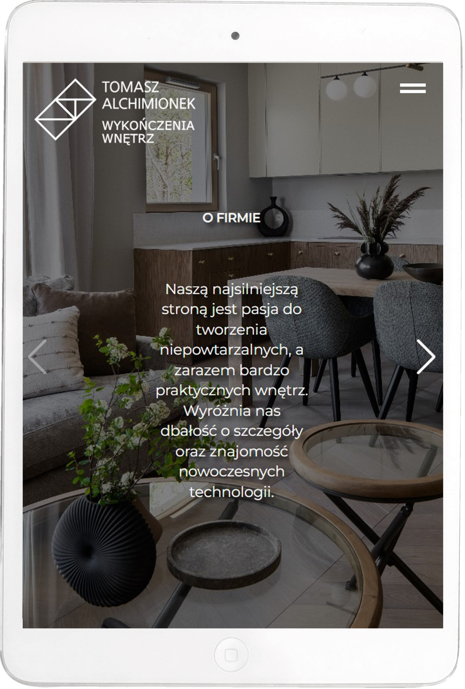
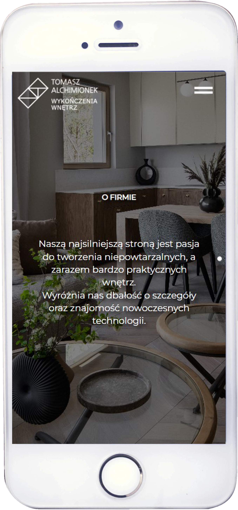
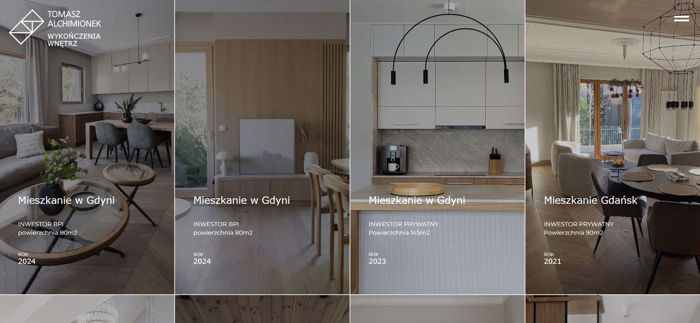
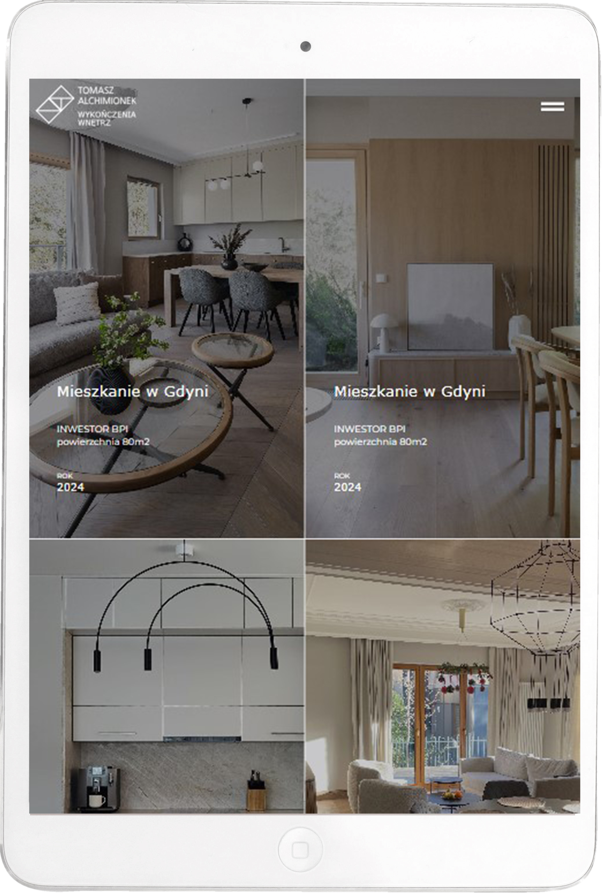
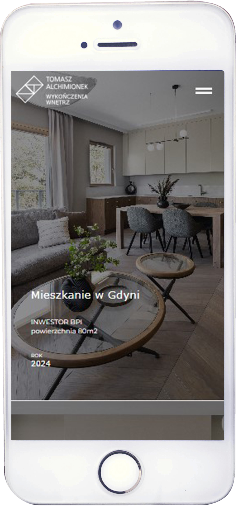
Click images below to see more details about the projects. Filter them by date or category with following options:
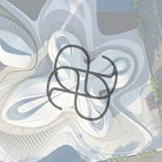
Alchimionek Branding 2013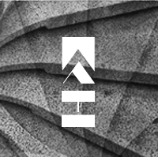
TA Website 2014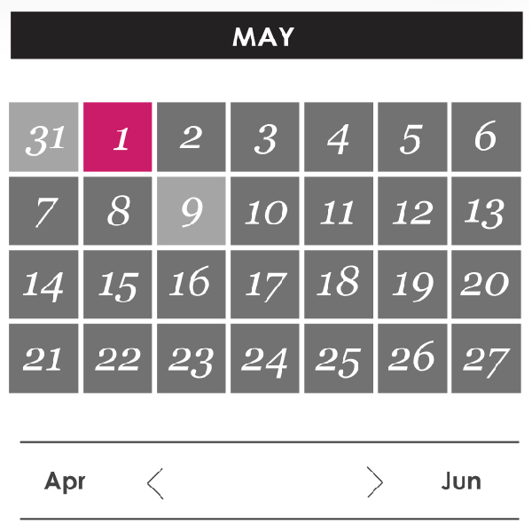
Snap Fashion 2012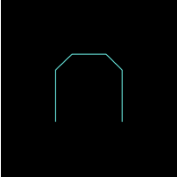
Hud branding 2017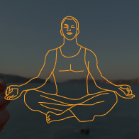
Trubrain 2016Alchimionek'Ewelina completed some work for Open Knowledge, working on designs and code to support some website improvements and laying out some reports for us. Ewelina is a conscientious and hard worker, who shows real commitment to her work and will push herself to do her best work possible'
Jo Barratt, Project manager at Open Knowledge
'Ewelina is talented designer and great to work with. She's very innovative and always looking for a new solutions and fresh ideas that can advance her knowledge to exceed clients expectations and goals. Ewelina is a passionate designer and always seems to have great awareness of new creative strategies and technology. Highly recommended.'
Alicja Alchimionek, Founder & Head Designer at Alchimionek
'Ewelina worked at coANDco in design and user experience. She is a pleasure to work with and she is very talented. She helped us creating and illustrating mobile user experiences for large brands which impressed our clients.
Christoph Burgdorfer, Managing Director, Partner, Founder, coANDco (UK) Ltd
I can highly recommend Ewelina as a creative, talented, keen and ambitious member of any team!'